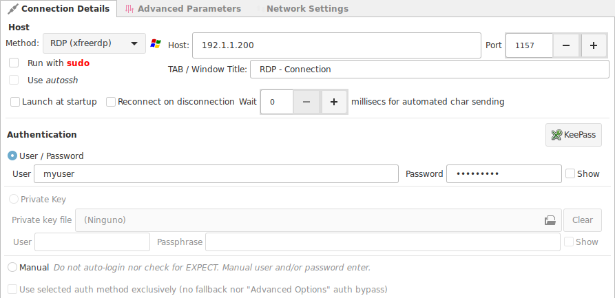
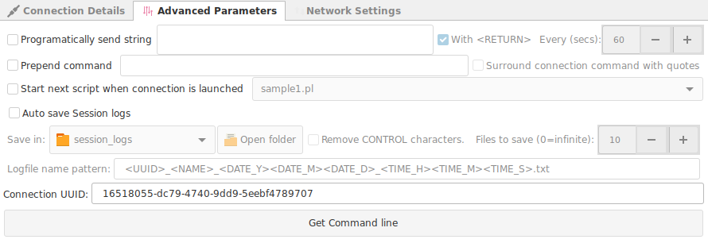
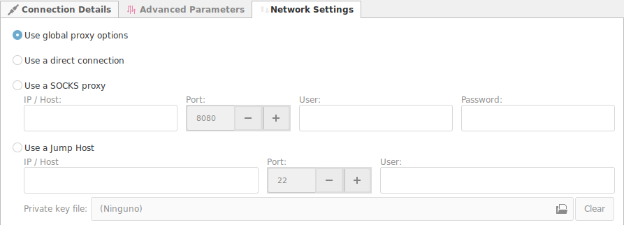
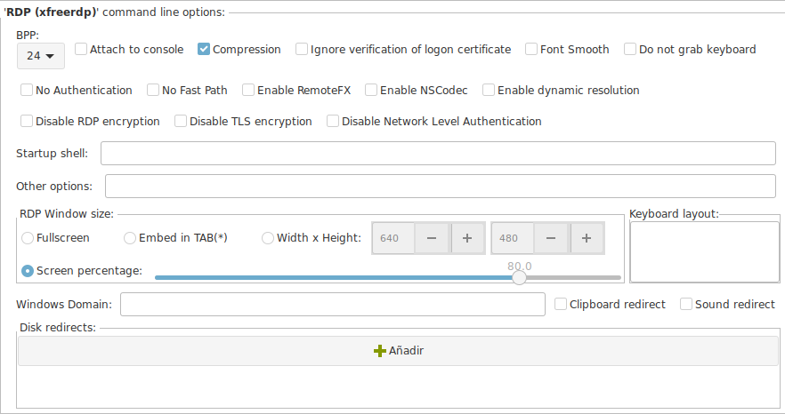

RDP
Connection
Connection Details

- Method : For this case, we select
- freerdp
- rdesktop
- Host : The IP or Hostname of the machine we want to connect to.
- Port : Port number to use for this connection.
- Run with sudo : * Pending
- Use autossh : * Pending
- TAB/Window Title : The name will be assigned to this tab or window. (Useful for password managers, that use the window title to execute macros, or to identify each connection on the taskbar).
- Launch on start up : If this connection should be launched automatically each time Ásbrú starts for the first time.
-
Reconnecton on disconnection : If there is a remote disconnection, reconnect automatically.
-
Authentication
-
KeePass button : If you have KeePass integration available, the button will be enabled. To see the use of this feature read KeePass Integration
-
User / Password : Authenticate using the traditional logging sequence of typing a user and password.
- Private Key : Use a public or private key to login into the remote server.
- Private Key : Select your private key, or leave black if you are going to use your public key.
- User / Passphrase : The user and passphrase that will be used to automate your login.
- Manual : Do not automate login, let me do all the authentication sequence.
-
Advanced Parameters

- Programmatically send a string : Send a specified regex expression every selected seconds to the terminal.
- Prepend command : Add this command before the ssh command connection string.
- Start next script when connection is launched : * Pending
- Auto save session logs : Save session log at the end of the session. Select the location.
- Log patter name: Define the pattern to name your session file.
Network Settings
This networking options override the Global Networking options for this connection.

- Use global proxy options : Use the globally predefined Networking options.
- Use direct connection : If you declared a Global Proxy and you do not need it for this connection.
- Use SOCKS proxy : Use a SOCKS proxy to exit the local network.
- Jump Server : Use a jump server to exit the local network, or connect to an internal machine behind a FireWall.
RDP Settings
